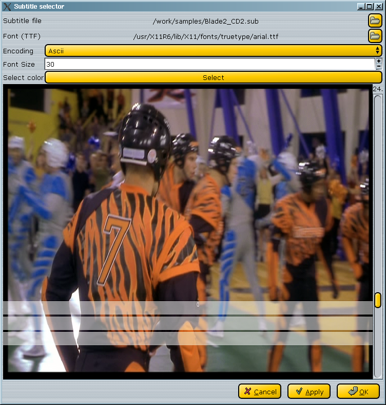
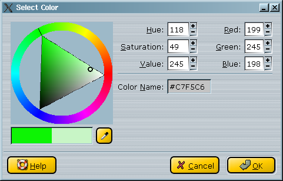

Vidéo : filtres divers
1.Avant-propos
A ce jour, cette catégorie ne contient que le filtre subtitle (sous-titre).
2.Divers
Subtitle
Ce filtre est un des plus sophistiqués du programme. Sa fenêtre de dialogue se présente ainsi :

Les deux premières étapes consistent à sélectionner le fichier de sous-titrage et la police TTF. Le format du fichier de sous-titrage peut être srt ou sub (détection automatique).
Le bouton color vous permet de choisir la couleur des sous-titres.
Vous obtiendrez quelque chose comme ceci :

Warning: Il est préférable de choisir la couleur des sous-titres dans les jaunes/verts, sans quoi vous risquez d'avoir des problèmes de lisibilité à cause de l'espace de couleurs utilisé. |
Une fois la couleur choisie, vous pouvez positionner le sous-titre par rapport à l'image grâce à l'ascenceur de droite.
|